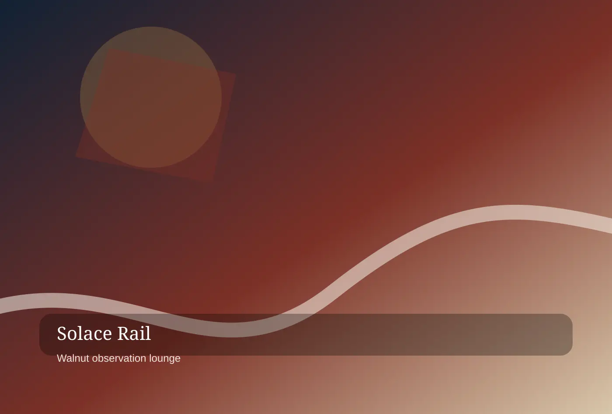
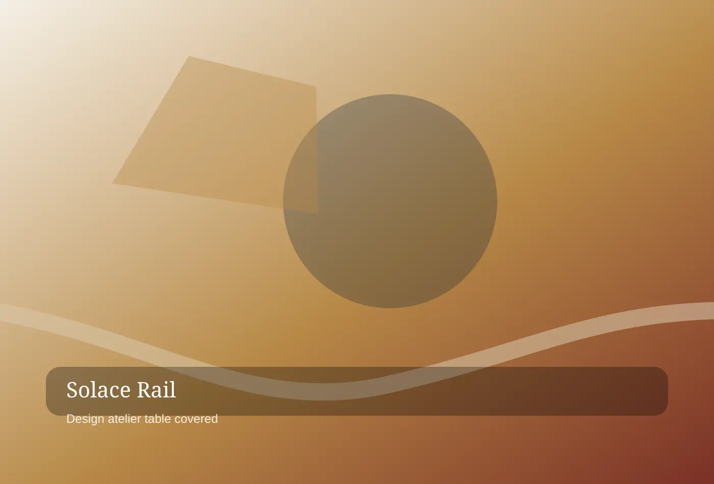

Heritage Signage Systems
For private compartment thinking, Solace Rail Studios shapes heritage signage systems through measured pacing and a process built for boutique hotels, private rail operators.
STREAMLINE MODERNE RAIL HOSPITALITY
Solace Rail Studios is a premium streamline moderne rail hospitality partner for boutique hotels, private rail operators, station developers, and destination brands. Each commission is designed to feel specific, useful, and unmistakably owned by the people who live with it.
Start a conversation
streamline moderne rail hospitality
Hospitality begins before a guest reaches reception. We map the first ninety seconds of arrival, then tune sightlines, scent, lighting, luggage movement, and human greeting moments so a lobby or rail platform feels composed rather than crowded.
For signature arrival choreography, Solace Rail Studios maps signature arrival choreography through clear decisions and a process built for boutique hotels, private rail operators, station developers, and destination brands. The work begins with careful listening, then turns research into choices a client team can discuss, price, operate, and improve. Because arrival lounge strategy is never isolated from brand behavior, every recommendation connects atmosphere, logistics, language, and the people who will carry it forward.

streamline moderne rail hospitality
Every plan is organized as a sequence of compartments: public welcome, semi-private pause, intimate conversation, and restorative retreat. This lets properties provide privacy without losing the romance of shared travel.
For private compartment thinking, Solace Rail Studios shapes private compartment thinking through measured pacing and a process built for boutique hotels, private rail operators, station developers, and destination brands. The work begins with careful listening, then turns research into choices a client team can discuss, price, operate, and improve. Because sleeper suite styling is never isolated from brand behavior, every recommendation connects atmosphere, logistics, language, and the people who will carry it forward.
For private compartment thinking, Solace Rail Studios shapes heritage signage systems through measured pacing and a process built for boutique hotels, private rail operators.
For private compartment thinking, Solace Rail Studios calibrates arrival lounge strategy through distinctive atmosphere and a process built for boutique hotels, private rail operators.
For private compartment thinking, Solace Rail Studios documents sleeper suite styling through operational confidence and a process built for boutique hotels, private rail operators.
streamline moderne rail hospitality
Our palette favors walnut, mohair, ribbed glass, etched brass, stone, and modern acoustic surfaces. Each selection must age gracefully, clean efficiently, and tell a story guests can repeat.
For materials with provenance, Solace Rail Studios calibrates materials with provenance through distinctive atmosphere and a process built for boutique hotels, private rail operators, station developers, and destination brands. The work begins with careful listening, then turns research into choices a client team can discuss, price, operate, and improve. Because heritage signage systems is never isolated from brand behavior, every recommendation connects atmosphere, logistics, language, and the people who will carry it forward.
streamline moderne rail hospitality
Discovery rides, passenger profiles, concept sketches, operational walk-throughs, fabrication packets, steward training, and opening-night calibration create a route from atmosphere to measurable service performance.
For seven-step studio route, Solace Rail Studios documents seven-step studio route through operational confidence and a process built for boutique hotels, private rail operators, station developers, and destination brands. The work begins with careful listening, then turns research into choices a client team can discuss, price, operate, and improve. Because arrival lounge strategy is never isolated from brand behavior, every recommendation connects atmosphere, logistics, language, and the people who will carry it forward.
Discovery rides, passenger profiles, concept sketches, operational walk-throughs, fabrication packets, steward training, and opening-night calibration create a route from atmosphere to measurable service performance. Solace Rail studio note
streamline moderne rail hospitality
Recent engagements improved lounge dwell time, reduced wayfinding questions, and increased premium suite inquiries because the environment finally communicated what staff already delivered: calm, care, and anticipation.
For numbers from recent journeys, Solace Rail Studios refines numbers from recent journeys through memorable details and a process built for boutique hotels, private rail operators, station developers, and destination brands. The work begins with careful listening, then turns research into choices a client team can discuss, price, operate, and improve. Because sleeper suite styling is never isolated from brand behavior, every recommendation connects atmosphere, logistics, language, and the people who will carry it forward.

streamline moderne rail hospitality
Travel editors, operators, and frequent guests describe our spaces as cinematic without becoming theatrical. The praise that matters most is practical: guests know where to go, where to rest, and what to remember.
For guest notes from the platform, Solace Rail Studios translates guest notes from the platform through responsible stewardship and a process built for boutique hotels, private rail operators, station developers, and destination brands. The work begins with careful listening, then turns research into choices a client team can discuss, price, operate, and improve. Because heritage signage systems is never isolated from brand behavior, every recommendation connects atmosphere, logistics, language, and the people who will carry it forward.
For guest notes from the platform, Solace Rail Studios shapes arrival lounge strategy through measured pacing and a process built for boutique hotels, private.
For guest notes from the platform, Solace Rail Studios calibrates sleeper suite styling through distinctive atmosphere and a process built for boutique hotels, private.
For guest notes from the platform, Solace Rail Studios documents heritage signage systems through operational confidence and a process built for boutique hotels, private.
streamline moderne rail hospitality
Interior designers, lighting directors, service writers, millwork partners, and operations advisors sit at one table. The integrated model prevents a beautiful drawing from becoming an impossible handoff.
For the carriage table, Solace Rail Studios protects the carriage table through premium clarity and a process built for boutique hotels, private rail operators, station developers, and destination brands. The work begins with careful listening, then turns research into choices a client team can discuss, price, operate, and improve. Because arrival lounge strategy is never isolated from brand behavior, every recommendation connects atmosphere, logistics, language, and the people who will carry it forward.
streamline moderne rail hospitality
Instead of a static gallery, our work reads like a timetable of moods: dawn arrivals, evening departures, discreet dining, rain-soaked platforms, and quiet overnight cabins designed around emotional tempo.
For portfolio in motion, Solace Rail Studios elevates portfolio in motion through useful rituals and a process built for boutique hotels, private rail operators, station developers, and destination brands. The work begins with careful listening, then turns research into choices a client team can discuss, price, operate, and improve. Because sleeper suite styling is never isolated from brand behavior, every recommendation connects atmosphere, logistics, language, and the people who will carry it forward.
Instead of a static gallery, our work reads like a timetable of moods: dawn arrivals, evening departures, discreet dining, rain-soaked platforms, and quiet overnight cabins designed around emotional tempo. Solace Rail studio note
streamline moderne rail hospitality
Concept intensives, full property transformations, and launch retainers are priced around decision speed and operational depth. Each engagement includes documentation your team can use long after opening week.
For investment tiers, Solace Rail Studios maps investment tiers through clear decisions and a process built for boutique hotels, private rail operators, station developers, and destination brands. The work begins with careful listening, then turns research into choices a client team can discuss, price, operate, and improve. Because heritage signage systems is never isolated from brand behavior, every recommendation connects atmosphere, logistics, language, and the people who will carry it forward.
streamline moderne rail hospitality
We answer the questions operators ask privately: how to protect maintenance budgets, where to hide equipment, how to avoid theme-park nostalgia, and when to let a historic reference stay understated.
For operator questions, Solace Rail Studios shapes operator questions through measured pacing and a process built for boutique hotels, private rail operators, station developers, and destination brands. The work begins with careful listening, then turns research into choices a client team can discuss, price, operate, and improve. Because arrival lounge strategy is never isolated from brand behavior, every recommendation connects atmosphere, logistics, language, and the people who will carry it forward.
For operator questions, Solace Rail Studios shapes sleeper suite styling through measured pacing and a process built for boutique hotels, private rail operators, station.
For operator questions, Solace Rail Studios calibrates heritage signage systems through distinctive atmosphere and a process built for boutique hotels, private rail operators, station.
For operator questions, Solace Rail Studios documents arrival lounge strategy through operational confidence and a process built for boutique hotels, private rail operators, station.
streamline moderne rail hospitality
Our journal studies forgotten station rituals, contemporary luggage behavior, dining car etiquette, and the details that turn premium hospitality into a story guests photograph for the right reasons.
For field dispatches, Solace Rail Studios calibrates field dispatches through distinctive atmosphere and a process built for boutique hotels, private rail operators, station developers, and destination brands. The work begins with careful listening, then turns research into choices a client team can discuss, price, operate, and improve. Because sleeper suite styling is never isolated from brand behavior, every recommendation connects atmosphere, logistics, language, and the people who will carry it forward.
streamline moderne rail hospitality
Bring us a platform, lobby, carriage, or guest sequence that deserves more atmosphere. We will return with a disciplined concept route, early budget signals, and the service behaviors that make it real.
For reserve a design journey, Solace Rail Studios documents reserve a design journey through operational confidence and a process built for boutique hotels, private rail operators, station developers, and destination brands. The work begins with careful listening, then turns research into choices a client team can discuss, price, operate, and improve. Because heritage signage systems is never isolated from brand behavior, every recommendation connects atmosphere, logistics, language, and the people who will carry it forward.
Bring us a platform, lobby, carriage, or guest sequence that deserves more atmosphere. Solace Rail studio note